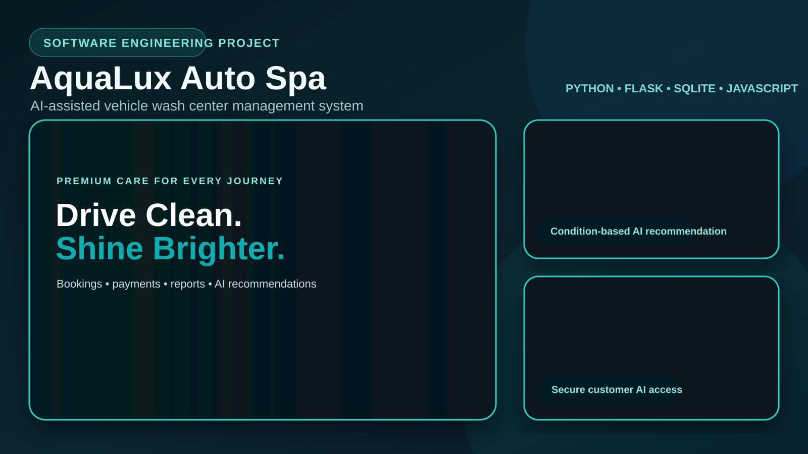
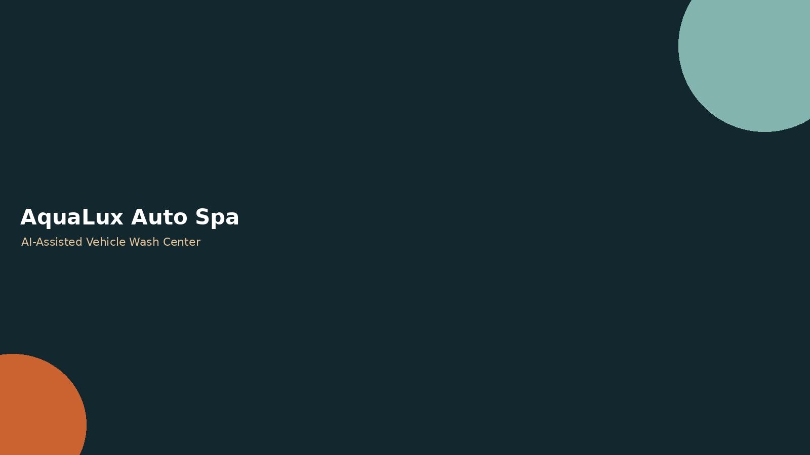
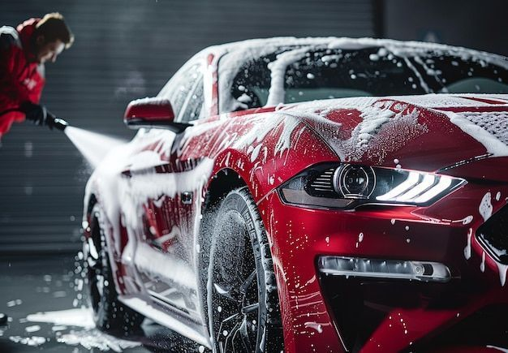
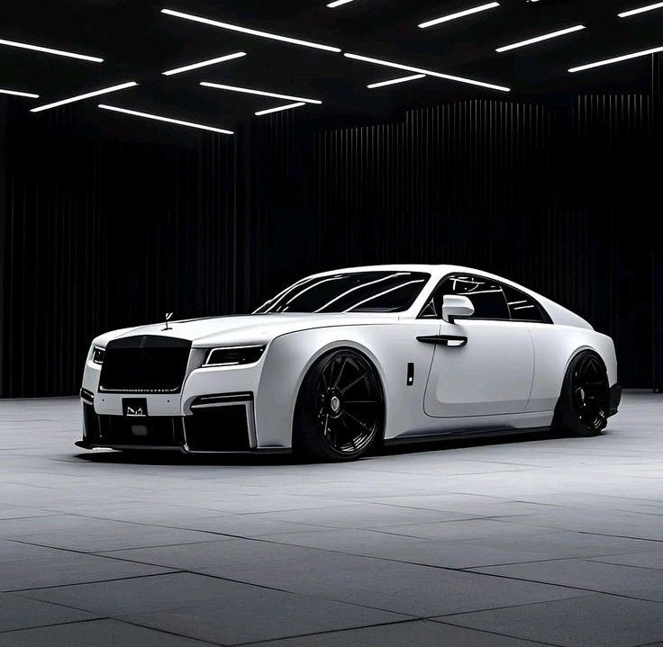
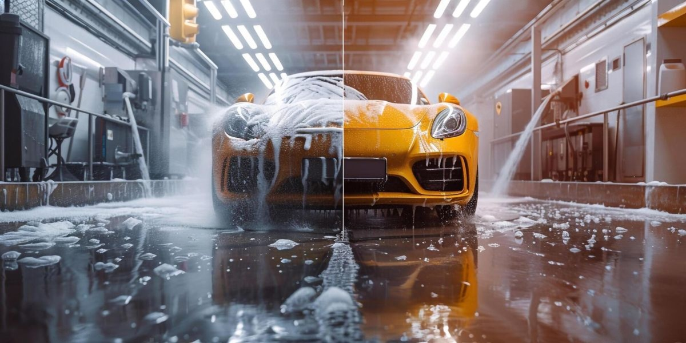
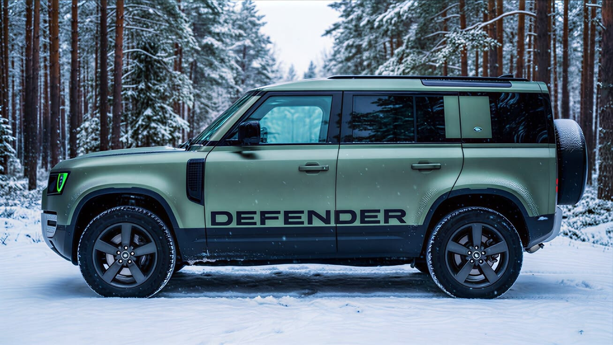

Final software engineering project
AquaLux Auto Spa
An AI-assisted vehicle wash center management system designed around the complete customer journey, from discovering services and booking a wash to payments, reports, live availability and explainable vehicle-care recommendations.


Project overview
Designed around real vehicle-wash operations
AquaLux combines a public-facing vehicle-care website with authenticated workspaces for customers, staff and administrators. The system supports customer and vehicle records, booking control, payments, reports, secure access and an AI-assisted recommendation workflow.
The interface uses a consistent dark automotive visual language with cyan and teal accents, large vehicle photography, glass-like panels and clear task-focused forms.
Interface showcase
Public customer experience


Premium vehicle-care landing page
Service discovery, package navigation, customer login and booking actions are presented with a cinematic automotive style.


Vehicle-care services
Exterior wash, full vehicle wash and smart package guidance are grouped into clear service choices.


Authenticated AI support
AI recommendations are protected behind customer authentication and connected to saved customer and vehicle data.
AI workspace
Decision support and customer intelligence

AquaLux AI login
A focused sign-in flow separates secure management and AI features from the public website.


Condition-based vehicle-care advisor
The advisor combines vehicle type, dirt level, interior needs and special conditions to explain a suitable wash package.


Operational booking intelligence
Stored booking records support live slot availability, operating-hour checks, already-booked times and demand indicators.
Core capabilities
What the system demonstrates
Role-based access
Separate customer, staff and admin flows with protected pages.
Booking control
Prevents conflicting bookings and supports operating-day rules.
Payments and reports
Payment records, receipts and daily, weekly and monthly reporting.
AI recommendation
Explainable package suggestions based on vehicle condition inputs.
Live availability
Available and booked times derived from stored booking data.
Responsive UI
Consistent dark visual system across public and authenticated areas.
Source code
Explore the AquaLux implementation
Review the Flask application, SQLite integration, interface code and project documentation in the repository.